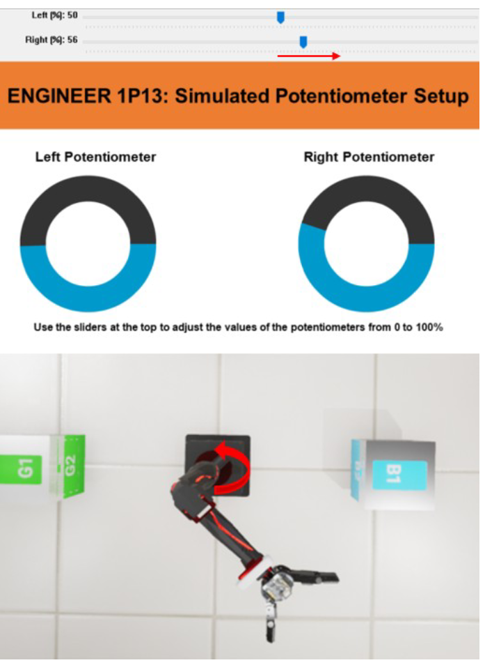

.png)
Q Arm User-Controlled Algorithm
Timeline : October 2023 - December 2023
In this project, my team had to create a program that would transport a container into autoclaves. There had to be a program where the robotic arm would
be user controlled and another where it would be automatic. The team had to have successful programs for both the virtual simulation environment and the
physical Q-Arm. I was in charge of the Q-Arms movement in terms of rotation.
How I did it:
The QArm code had built in functions capable of reading the potentiometer values. Using these values the program would be able to know whether to rotate clockwise or the other direction. In an automatic program, the Q-Arm would first detect the location of the container and rotate to the most direct angle.

Mistakes Made:
The problems I faced was working with the limited functions of the Q-Arm Library. This library only had a few types of movement and figuring out which ones
to use became difficult. Working with the team, we agreed with one direction and found a way for all our functions to work together. I also faced some problems
with a team member of mine that lacked communication. We often had multiple misunderstandings and creation of redundant code that has already been made because
the member didnt communicate it. I talked formally with the member and came to a comprimise. For the rest of the project, there were little issues.
Skills Mastered:
-

Python
-

Hardware